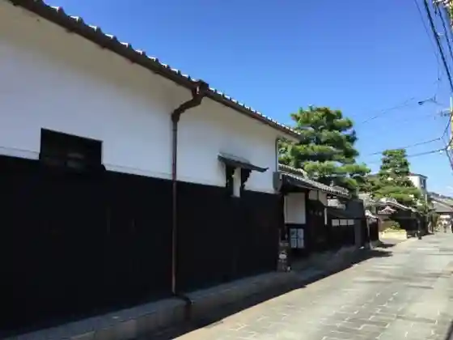
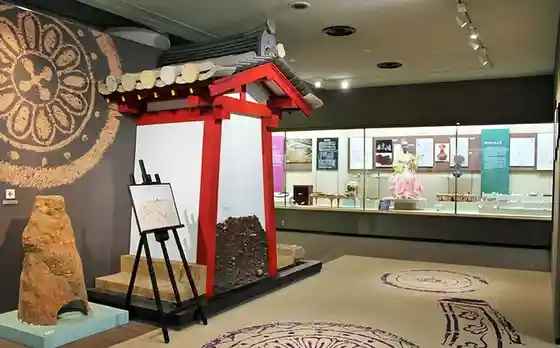
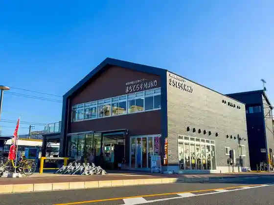
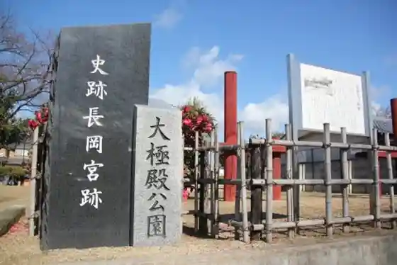

Take no Kei
Muko, Kyoto · 075-874-1347 · Official / source link
Nishikoku Kaido
Muko, Kyoto · 075-931-1182 · Official / source link

Burial Mound Meguri Kosu
Muko, Kyoto · Official / source link

Muko Kanko Koryu Center Machiterasu MUKO
Muko, Kyoto · 075-874-2031 · Official / source link

Historic Site Nagaoka Kyuseki Taikyoku Dono Sho Ate Ato
Muko, Kyoto · Official / source link

Kogetsu Iori
Muko, Kyoto · 075-933-4560 · Official / source link
Muko Shrine
Muko, Kyoto · 075-921-0217 · Official / source link
Historic Site Kyuseki Meguri Kosu
Muko, Kyoto · Official / source link
Nishikoku Kaido Meguri Kosu
Muko, Kyoto · Official / source link
Historic Site Nagaoka Kyuseki Chodo In Ato
Muko, Kyoto · 075-931-3841 · Official / source link
Muko Tenmonkan
Muko, Kyoto · 075-935-3800 · Official / source link
Toyo Chikko
Muko, Kyoto · 075-933-7733 · Official / source link
Moto Inari Burial Mound
Muko, Kyoto · 075-874-3860 · Official / source link
Kyu Ueda Ie House
Muko, Kyoto · 075-874-1023 · Official / source link
Honzan Sekito Tera
Muko, Kyoto · 075-931-0713 · Official / source link
Kita Makoto Kei Tera
Muko, Kyoto · 075-933-7563 · Official / source link
Rekishi Bunka Koryu Center
Muko, Kyoto · 075-932-5011 · Official / source link
Nagamori Korekushongyararii
Muko, Kyoto · 075-280-1110 · Official / source link
Muko Bunka Museum
Muko, Kyoto · 075-931-1182 · Official / source link
Minami Makoto Kei Tera
Muko, Kyoto · 075-921-3912 · Official / source link
Terato Otsuka Burial Mound
Muko, Kyoto · 075-874-3860 · Official / source link
Mozume Kurumazuka Burial Mound
Muko, Kyoto · 075-874-3860 · Official / source link
Muko Tourism Association
Muko, Kyoto · 070-1765-5398 · Official / source link
Go Tsukahara Burial Mound
Muko, Kyoto · 075-874-3860 · Official / source link